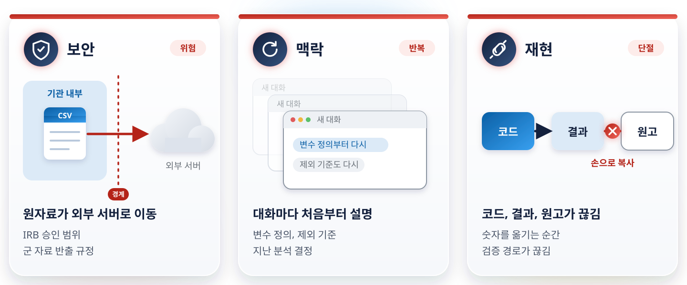
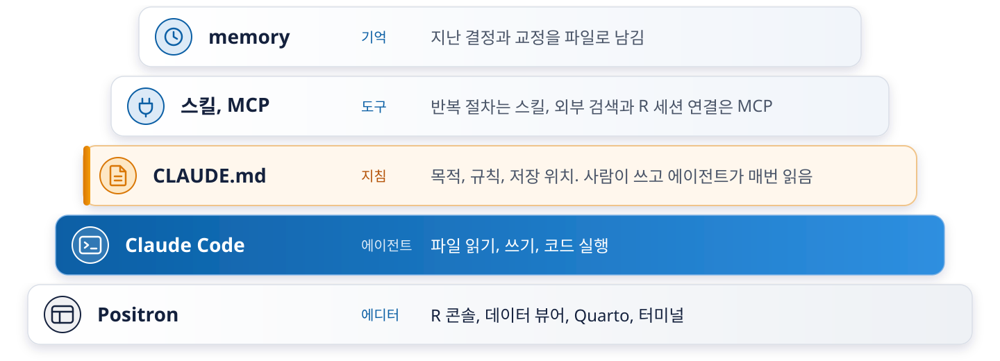
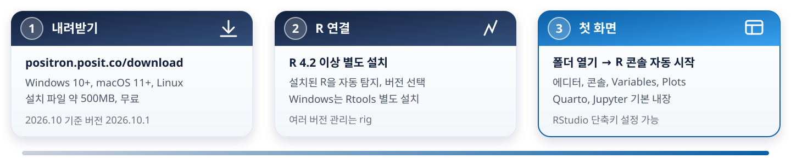
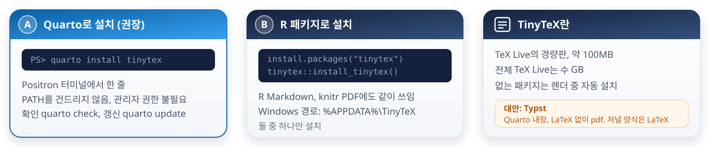
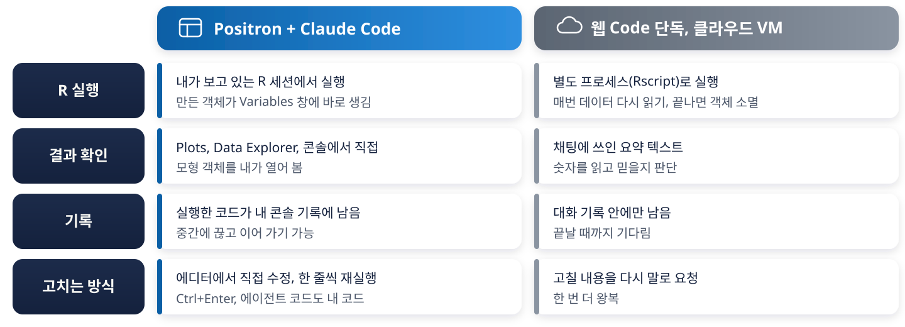
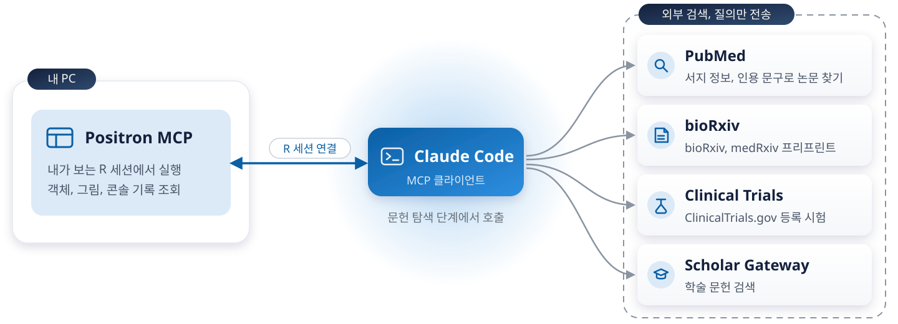

연구 생산성 향상을 위한 Agent AI 기반 워크플로우: 데이터 분석에서 논문 작성까지
국민건강영양조사 vs 공군 조종사 건강검진: 대사증후군, 지방간 위험 비교 사례
2026-11-03
AI 활용 방식 4가지
1. AI 활용 방식

챗봇 방식
1. AI 활용 방식

챗봇 방식의 한계
1. AI 활용 방식

에이전트 방식
1. AI 활용 방식

연구 워크플로우 6단계
1. AI 활용 방식
① 전처리
자료 정제, 결합, 정의에 따른 변수 생성
원자료는 읽기 전용
② 탐색
변수 구조, 결측, 기술통계
구조와 집계만 읽음(행 단위 출력 금지)
③ 가설
선행 연구의 남은 의문에서 연구 질문
분석계획서에 기록
④ 분석
코드 작성, 내 R 세션에서 실행, 해석
수치는 연구자가 대조
⑤ 문헌
문헌 DB MCP로 검색, 요약 정리
인용 검증
⑥ 초안
Methods, Results부터 원고 초안
내부 검토 후 수정
사례 연구: 공군 조종사와 일반 남성의 대사증후군
1. AI 활용 방식
동기
선행 지방간 논문(AMHP 2025)에서 요산이 조종사에서만 위험 요인
대사증후군에서도 같은 패턴인가
설계
조종사 건강검진 2,604명 vs 국민건강영양조사 1,093명
남성 24–61세, 단면 비교
분석
유병률, 구성요소별 로지스틱 회귀
연령, 흡연, 음주, 운동 보정
주요 결과
대사증후군 11.1% vs 37.1%, aOR 0.30
혈압 구성요소만 조종사가 높음, aOR 2.12
- 출판: Ku B, Song DH. BMJ Mil Health 2026, epub
- 3막: 이 논문을 새 폴더에서 처음부터 다시 분석. 출판 논문은 참고하지 않음
작업 환경 구성
2. 작업 환경

Positron: 설치와 구동
2. 작업 환경

R 인터프리터 선택
오른쪽 위 인터프리터 메뉴에서 R 버전 지정
콘솔이 그 버전으로 시작
RStudio 사용자 설정
RStudio 단축키 켜기, 테마 선택
Ctrl+Enter 실행, Ctrl+Shift+M 파이프
확장 설치
Claude Code 확장 (다음 장)
Quarto, Jupyter는 이미 내장
Quarto: 문서 생성
2. 작업 환경

R Markdown의 후속
같은 팀(Posit)이 만든 다음 세대, Rmd 대부분 그대로 렌더
R에 묶이지 않음
Python, Julia도 같은 문서. 렌더 엔진이 R 패키지가 아니라 독립 프로그램
확장이 내장
revealjs, 책, 웹사이트, 상호참조, 탭이 패키지 없이 기본
TinyTeX: LaTeX 설치
2. 작업 환경

- pdf 출력 전 확인 한 줄. “not installed”면 위 A 또는 B
Positron + Claude Code vs 웹 Code
2. 작업 환경

Claude Code: 설치와 구동
2. 작업 환경

읽기
CLAUDE.md, 코드북, 스크립트
쓰기
스크립트, qmd, 응답서 초안
실행
쉘 명령, R 코드(Positron MCP)
권한
도구별 승인, 프로젝트별 설정
시연: 설치와 첫 실행
2. 작업 환경
1. Positron
설치 → 첫 실행 → 폴더 열기 → R 콘솔
2. Claude Code CLI
PowerShell 설치 한 줄 → claude → 로그인
3. 확장
Extensions에서 설치 → ✻ 아이콘으로 패널 열기
지침 파일의 역할
2. 작업 환경
- 프롬프트는 한 번 읽히고 사라짐. 파일은 세션마다 읽힘
- 챗봇에서 매번 사람이 하던 일을 파일이 대신함
CLAUDE.md
문제: 정의, 규칙을 세션마다 다시 설명
해법: 프로젝트 지침을 한 파일에, 자동으로 읽힘
스킬
문제: 같은 절차를 매번 말로 지시
해법: 절차를 파일로, 말투로 자동 발동
MCP
문제: 외부 검색 결과를 손으로 복사
해법: 에이전트가 도구를 직접 호출
memory
문제: 지난 결정을 다음 세션이 모름
해법: 결정과 교정을 파일로, 시작 때 읽힘
권한
문제: 에이전트가 무엇이든 할 수 있음
해법: 도구별 허용, 읽기 전용 폴더, 매번 승인
오케스트레이션
문제: 쓴 모델이 자기 글을 검토
해법: 작성과 검토를 다른 모델에, 공유 상태는 파일
CLAUDE.md: 개념과 역할
2. 작업 환경
개념
- 프로젝트 폴더 맨 위의 Markdown 파일
- 세션을 열 때마다 에이전트가 먼저 읽음
- 사람이 쓰거나, 에이전트가 초안을 쓰고 사람이 확정
- 같은 내용을 AGENTS.md로 두면 Codex, Copilot도 읽음
역할과 효과
- 목적과 현재 상태: 세션 첫 질문이 사라짐
- 정의 고정: MetS 기준, 변수명을 코드와 같은 이름으로
- 행동 규칙: 집계만 출력, 수치 도출 과정 기록
- 저장 규칙: 산출물이 날짜 폴더에 쌓여 추적 가능
작성 요점
- 목적과 역할을 먼저. 무엇을 끝내려는 프로젝트인지, 에이전트가 누구인지
- 행동 규칙은 에이전트의 실패 양상을 겨눈 문장으로
- 짧고 구체적으로. 긴 문서는 끝까지 안 읽힘
- 금지 목록보다 기본값을 적음
- 정의는 코드에서 쓰는 이름 그대로
- 교정이 생기면 그 자리에서 한 줄 추가
행동 규칙 예시: 네 가지 실패 양상
2. 작업 환경
Karpathy, X, 2026-01-26: “They don’t manage their confusion, don’t seek clarifications, don’t surface inconsistencies, don’t present tradeoffs, …” / “LLMs are exceptionally good at looping until they meet specific goals.”
forrestchang/andrej-karpathy-skills, CLAUDE.md (2026-01-27)
| 실패 양상 | 규칙 | 원문 |
|---|---|---|
| 가정을 숨기고 진행 | Think Before Coding | “Don’t assume. Don’t hide confusion. Surface tradeoffs.” |
| 요청보다 크게 설계 | Simplicity First | “Minimum code that solves the problem. Nothing speculative.” |
| 무관한 코드까지 수정 | Surgical Changes | “Touch only what you must. Clean up only your own mess.” |
| 검증 없이 완료 선언 | Goal-Driven Execution | “Define success criteria. Loop until verified.” |
사례 레포 CLAUDE.md의 같은 자리
- Think Before Coding ↔︎ 행동 규칙 1 “결과 생성 및 해석 시 추론은 최대한 배제하고 근거에 기반한 답변 도출”, 코딩 규칙 절 제목 “코딩 전 생각하기”
- Goal-Driven Execution ↔︎ 행동 규칙 9 “모든 수치 결과는 그 도출 과정을 문서에 포함”
CLAUDE.md 예시: 구조
2. 작업 환경
3 ## 프로젝트 개요
5 상태: 데이터 전처리 완료, 기초 및 최종 분석 완료, Quarto 분석 보고서 작성 완료
9 ## 목적
20 ## 역할
26 ## 행동 규칙
39 9. 모든 수치 결과는 그 도출 과정을 문서에 포함
41 ## 코딩 규칙
95 ## 윤리적 제약
129 ## 생성 파일 저장 공간- 6블록: 목적과 상태 / 역할 / 행동 규칙 / 코딩 규칙 / 윤리 제약 / 저장 규칙
- 같은 내용을 두 파일로: CLAUDE.md(Claude Code), AGENTS.md(Codex, Copilot)
CLAUDE.md 예시: 대사증후군 정의
2. 작업 환경
253 8. 대사증후군 (Metabolic Syndrome, MeTS) 진단 기준
255 - 복부비만 : 남성: ≥ 90cm / 여성: ≥ 85cm (허리둘레): mets_c1
256 - 중성지방 : ≥ 150 mg/dL 또는 이상지질혈증 약물 복용 중 :mets_c2
257 - HDL : 남성: < 40 mg/dL / 여성: < 50 mg/dL 또는 약물 복용 중 :mets_c3
258 - 혈압 : 고혈압 약물 복용중 또는 수축기 혈압 ≥ 130 또는
259 이완기 혈압 ≥ 85 :mets_c4
260 - 공복혈당 : ≥ 100 mg/dL 또는 당뇨병 약물 복용 중 :mets_c5- 변수명
mets_c1–mets_c5가 CLAUDE.md에서 코드로 그대로
경계: 폴더와 권한
2. 작업 환경
폴더: 사람과 에이전트의 자리를 나눔
airforce-fatty-liver/
├── code/agent_bot/2026-03-19/ … 08-16/
├── quarto/user/ # researcher
├── quarto/agent_bot/YYYY-MM-DD/
├── data/derived-data/ # read-only
└── references/agent-downloaded/- 에이전트 산출물은 날짜 폴더에: 추적, 덮어쓰기 방지
권한: 쓸 수 있는 도구와 폴더의 경계
- 읽기 전용: 원자료, 논문 PDF, 다른 프로젝트 레포
- 산출물 폴더와 프로젝트 밖 폴더는 설정에 명시
- 삭제, 외부 전송은 allow에 두지 않고 매번 승인
- 승인한 항목은 쌓임: 사례 레포 allow에
Bash(rm -f *.pdf)가 남아 있었음
스킬: 개념과 역할
2. 작업 환경
개념
.claude/skills/<이름>/SKILL.md파일 하나- 머리: name, description(발동 문구). 본문: 절차, 출력 형식
- 에이전트는 description만 늘 보고, 요청이 맞으면 본문을 읽어 따름
- 사람이 반복해서 내리던 지시를 파일로 옮긴 것
역할과 효과
- 한마디 요청으로 긴 절차가 실행됨
- 출력 형식이 고정됨: 표 열, 파일명, 저장 폴더
- 사람이 깜빡하는 점검 항목이 빠지지 않음
- 폴더 복사로 다른 프로젝트, 다른 사람에게 재사용
작성 요점
- 발동 문구는 내가 실제로 치는 말로. 문서용 표현은 발동 안 됨
- 스킬 하나에 작업 하나. 두 작업이 섞이면 발동 조건이 흐려짐
- 에이전트가 해도 되는 범위를 적음: 지적만인지, 수정까지인지
- 출력 위치와 형식을 고정. 없으면 매번 다른 곳에 다른 모양으로
스킬 예시: 수치 검증
2. 작업 환경
사례 레포의 2026-08-16 검증 절차를 SKILL.md로 옮기면 (가상 예, 실제 파일 아님)
---
name: verify-numbers
description: 원고, 답변서에 넣을 수치를 분석 데이터셋에서 다시 계산해 대조.
"수치 확인", "숫자 맞는지", "검증 돌려", "답변서 숫자" 요청 시 사용.
---
1. 대조할 수치를 문서에서 뽑아 표로: 문서 / 위치 / 값
2. `Rscript code/agent_bot/<날짜>/verify-numbers.R` 실행
분석은 바꾸지 않고 같은 데이터셋에서 재계산
3. 판정: 일치 / 불일치 / 확인 불가. 불일치는 고치지 않고 보고만
4. 결과: `output/agent_bot/<날짜>/verify-numbers.md`- 실제로는 사람이 매번 지시: “답변서 숫자 다시 계산해서 대조”. 스킬이면 “수치 확인” 한마디
- 작성 요점 네 가지가 각 줄에: 발동 문구 / 작업 하나 / 범위(보고만) / 출력 위치
CLAUDE.md와 스킬의 차이
2. 작업 환경
| CLAUDE.md | 스킬 (SKILL.md) | |
|---|---|---|
| 읽히는 때 | 세션마다 항상 | 요청이 발동 문구와 맞을 때만 |
| 담는 것 | 늘 적용되는 것: 목적, 역할, 정의, 규칙 | 한 작업의 절차: 순서, 체크리스트, 출력 형식 |
| 개수 | 프로젝트당 하나 | 작업당 하나, 여러 개 |
| 넣는 기준 | 모든 작업에 해당하는가 | 같은 절차를 세 번째 시키는가 |
사례에서
- CLAUDE.md: 집계값만 출력, 행 단위 출력 금지
- SKILL.md: 원고 수치를 데이터에서 다시 계산해 대조
하네스: 개념과 역할
2. 작업 환경
개념
- 모델을 감싸고 돌리는 프로그램. Claude Code 자체가 하네스
- 루프: 모델 호출 → 도구 실행 → 결과 반환 → 다시 모델 호출
- 여섯 요소: 실행, 도구, 컨텍스트, 상태, 수명주기, 검증
- CLAUDE.md, 스킬, MCP, memory는 하네스에 넣는 입력
역할과 효과
- 컨텍스트 관리: 지침 파일 로드, 스킬 description 노출, 긴 대화 요약
- 도구 호출과 권한 승인: 파일 읽기, 쉘 실행, MCP 중계
- 상태 유지: 세션, memory, git 작업 폴더
- 같은 모델도 하네스가 다르면 결과가 다름
설정 요점
- 연구자가 짜는 것이 아니라 고르고 설정하는 것
- 설정 창구: settings.json(권한, 모델, 훅), 지침 파일, MCP 등록
- 훅으로 루프에 끼어듦: 커밋 전 비밀 검사, 렌더 후 점검
- 하네스 버전이 바뀌면 기능 설명을 다시 대조
하네스와 지침 파일의 차이
2. 작업 환경
| 하네스 (Claude Code) | CLAUDE.md | 스킬 (SKILL.md) | |
|---|---|---|---|
| 무엇인가 | 모델을 돌리는 프로그램 | 텍스트 파일 | 텍스트 파일 |
| 누가 만드나 | 도구 개발사 | 연구자 | 연구자 |
| 정하는 것 | 언제 무엇을 읽고 실행하는가 | 무엇을 지킬 것인가 | 어떻게 할 것인가 |
| 바꾸는 법 | settings.json, 훅, 버전 업데이트 | 파일 편집 | 파일 편집 |
| 없으면 | 모델이 글만 내놓음 | 매 세션 정의, 규칙 재설명 | 매번 절차를 말로 지시 |
사례에서
- 하네스: 집계값 출력 규칙을 매 세션 읽어 넣고, 행 출력 명령을 권한 창에 띄움
- CLAUDE.md와 스킬: 그 규칙과 절차를 적어 둔 파일
MCP: 개념과 역할
2. 작업 환경
개념
- Model Context Protocol: 에이전트가 외부 도구를 함수처럼 부르는 규격
- 서버 하나 = 도구 묶음 하나 (PubMed, R 세션)
- 설정 한 번이면 모든 세션에서 사용
역할과 효과
- Positron MCP: 내 R 세션에서 실행, 객체 조회
- 문헌 MCP: 검색, 서지 조회, PDF 확보를 에이전트가 직접
- 복사, 붙여넣기 단계가 없어짐
- 결과에 DOI, 출처가 붙어 검증 가능
작성 요점
- 무엇이 밖으로 나가는지 확인: 검색 질의만
- 쓰는 도구만 연결. 많으면 선택이 흐려짐
- 권한 allow에 도구 이름 단위로
- 연결 상태 확인: claude mcp list
MCP 구성
2. 작업 환경

memory: 개념과 역할
2. 작업 환경
개념
- 세션에서 생긴 결정, 교정, 상태를 파일로 남김
- 파일당 사실 1건, 색인 파일 하나
- CLAUDE.md에 “시작 때 읽어라”를 적어야 작동
역할과 효과
- 다음 세션이 지난 결정을 앎: 같은 질문 반복 없음
- 교정이 쌓임: 같은 실수가 줄어듦
- 상태 스냅샷: 몇 주 뒤 돌아와도 바로 이어감
- CLAUDE.md와 분업: 규칙은 CLAUDE.md, 이력은 memory
작성 요점
- 사실과 이유를 같이: 무엇을, 왜
- 상대 날짜 대신 절대 날짜
- 틀린 것으로 밝혀지면 지움
- 에이전트가 쓰게 하되 사람이 가끔 정리
memory 예시
2. 작업 환경
- 파일당 사실 1건,
MEMORY.md가 색인 - 세션 시작 시 먼저 읽음
- 예: 출력 폴더 규칙(feedback), 프로젝트 상태 스냅샷(project)
오케스트레이션: 개념과 역할
2. 작업 환경
개념
- 에이전트 여럿에 역할을 나눔: 작성, 검토, 검증
- 오케스트레이터가 일을 나누고 결과를 모음
- 공유 상태는 대화가 아니라 파일: CLAUDE.md, memory, git
역할과 효과
- 쓴 모델과 검토 모델을 다른 계열로: 자기 검토의 맹점 회피
- 긴 작업을 병렬로: 섹션별 초안 동시 작성
- 한도, 오류 시 대체 모델로 자동 전환
- 누가 무엇을 했는지 파일 머리에 기록
작성 요점
- 작업마다 주 오케스트레이터는 하나
- 검토 결과는 별도 폴더에, 작성 쪽은 읽기만
- 반영 여부는 사람이 지적마다 결정
- 처음에는 하나로 충분. 둘 이상은 검토가 필요할 때
오케스트레이션 구성
2. 작업 환경
CLAUDE.md 하나
CLAUDE.md = AGENTS.md
공유 상태: memory/, review/, git
오케스트레이터 둘
작성: Claude Code(Claude Fable 5.1)
검토: Copilot CLI(GPT-6.0 Astra)
워커 둘
작성, 검증: Claude Opus 5.5
독립 검토: GPT-5.6 Terra(Codex CLI)
- 검토는 다른 계열 모델: Opus가 쓴 것은 Terra 또는 Astra가
- 디스패처
run-worker.ps1: Terra가 한도, 오류로 실패하면 Opus로 재실행, 실제 수행 모델 기록
시연: 프로젝트 설정
2. 작업 환경
에이전트 연구의 이득과 조건
2. 작업 환경
재현
숫자가 코드에서 나옴. 원고 수치를 스크립트로 재계산
추적
날짜 폴더, 대화 로그, memory. 몇 달 뒤에도 왜 그렇게 했는지 확인
속도
문헌 24편 서지와 PDF, Methods 초안, 응답서 초안을 세션 안에
일관성
정의와 규칙이 파일에 있어 세션이 바뀌어도 같은 기준
위 이득이 나오려면 필요한 것
조건 1. 규칙은 파일에
- 없으면: 세션마다 정의와 규칙을 다시 설명, 워커는 대화를 모름
- 예: MetS 정의를 스킬에 둬서 두 자료에 같은 함수 / 참고 금지 규칙이 파일에 없어 워커가 출판본을 가져옴
조건 2. 권한에는 경계
- 없으면: 에이전트가 원자료를 고치거나 개인 단위 자료를 화면에 띄울 수 있음
- 예: 원자료 폴더 쓰기 금지 설정, 출력은 집계만, 허용 목록 밖 명령은 실행 전 승인
조건 3. 검증은 사람
- 없으면: 빠르게 나온 틀린 숫자, 과한 분석이 그대로 원고로
- 예: 표 단순화 지시, 요산이 핵심이라는 판단, 참고 금지 논문 지적
출발 상태와 규칙
3. 사례: 대사증후군 논문
출발 상태
- 원자료 2개: 공군 조종사 검진, KNHANES 2022
- CLAUDE.md, 스킬 6개, 워커 4개
- 분석 코드, 결과, 원고 없음
규칙
- 원자료 읽기 전용
- 출판된 대사증후군 논문은 참고, 인용 금지
- 수치는 실행 출력에서만
단계마다 세 칸
- 프롬프트
- 에이전트가 한 일
- 내가 확인한 것
① 전처리
3. 사례: 대사증후군 논문
프롬프트
작업이 완료되면 공군 데이터 리코딩을 먼저 진행해줘. 공군 원본 코드값을 코드북 라벨로 치환 직업을 완료 후 바로 진행.
KNHANES 코드북이 필요할 것 같아. 기존에 작업했던 엑셀 파일을 derived-data에 업로드 했어. 참고해
에이전트가 한 일
- 워커 2개 병렬: 공군 정제, KNHANES 정제 → 병합 워커
- 공군: 2,827 → 여성 88 제외 → 2,739. 코드→라벨 치환 검증 14/14
- KNHANES: 6,265 → 남성 2,797 → 24–61세 1,299 → 검진 1,240 → 공복 8시간 1,192 → 완전사례 1,174
- MetS 5요소를 두 자료에 같은 함수로 재산출, 병합 3,913 × 55
- 공통 함수의 스코프 버그 발견 후 수정(
.env$참조)
내가 확인한 것
- METS는 재산출함. 2. 약물복용 여부 3. GLIDISEASE는 무시해도 상관 없음. 3. BMI는 현재 키, 체중으로 재계산
KHNANES 데이터를 단순 표본 데이터로 간주해서 분석을 진행할 예정이야. 그 이유는 공군 건강검진 데이터에 가중치 적용이 불가하거든.
complete case로 결정
① 확인 요청: 재산출 MetS와 원 변수의 불일치
3. 사례: 대사증후군 논문
에이전트가 한 일
- 재산출
METS_new308명(11.2%) vs 원METS290명(10.6%). 불일치 52명(1.9%) - 원인 분해
- HDL 정확히 40 mg/dL 17명: 원 변수는 ≤ 40, JIS 기준은 < 40
- 수축기 130–134 mmHg만으로 충족 30명: 원 변수는 같은 구간에서 양성, 음성 혼재
- 약물 변수로만 충족 5명
어떤 단일 절단값으로도 재현되지 않습니다.
되물은 것
사용자 확인이 필요한 사항 (모아서 한 번에 답해 주시면 됩니다)
- 원 METS 산출 방식 확인 가능한지. 불가능하면 재산출을 주 변수로
- 병력 변수가 “진단”인지 “약물 복용”인지
- 데이터에서 드러난 추가 사항: 코드북에 없는 값, 전제와 다른 측정 범위, BMI 차이
내가 확인한 것
- METS는 재산출함. 2. 약물복용 여부 3. GLIDISEASE는 무시해도 상관 없음. 3. BMI는 현재 키, 체중으로 재계산
- 원 변수는 검증용
METS_orig로만 보존 - 시간이 오래 걸린 이유를 물었더니: 브리핑 뒤 변경 3차례마다 재실행
결정이 필요한 사항은 워커 투입 전에 한 번에 모아서 여쭙고
① 영상: 자료 정제
3. 사례: 대사증후군 논문
② 탐색
3. 사례: 대사증후군 논문
프롬프트
최종적으로 도출한 분석 데이터셋의 변수 구조와 결측을 요약해줘.
DX 관련 변수, GGT와 HBA1C, URBLD, URPROT 는 분석변수에 포함하지 않을꺼야. 나머지 변수에 대해 결측을 제외한 completed case로 구성된 데이터셋을 최종 분석 데이터셋으로 생성해줘.
에이전트가 한 일
- 병합본 3,913 × 55를 R로 읽어 변수 6묶음, 결측 표로 요약(집계만)
- 구조적 결측 구분: 진단 변수는 KNHANES 전용, GGT는 공군 전용, HbA1c는 공군 74% 결측
- 완전사례 48열, 3,823명(공군 2,738, KNHANES 1,085). 제외 89명 중 71명은 신체활동 무응답만
- Figure 1 흐름도에 “Excluded: missing covariates” 노드 추가, 렌더 확인
내가 확인한 것
연령표준화는 따로 하지 않을꺼야.
- 에이전트의 주의: 평균 연령 36세 vs 44세, 조유병률 직접 비교 문장은 심사 지적 가능 → 층화와 연령 보정 OR로
- 공군 혈액검사 전원 공복 확인 → 흐름도 문구 수정
③ 가설 설정
3. 사례: 대사증후군 논문
프롬프트
그럼 지금부터 분석을 시작해줘. 분석의 초점은 다음과 같아. 1: 공군 파일럿과 일반인구 집단 간 대사증후군 유병률이 유의하게 다른가? 2. MeTS 구성 요소들 중 어떤 요소가 … 가장 큰 유병률 차이를 보이는가? 3: 혈액검사 바이오마커 중 … 유의한 차이를 보이는 지표는 무엇인가? 4: … 건강근로자효과(healthy worker effect)의 근거가 있는가?
에이전트가 한 일
지시대로 분석은 실행하지 않고 통계분석계획서(SAP) v2.0을 수립해 문서화했습니다.
- H1–H4마다 귀무가설, 추정량, 모형, 산출물(Table 1–4, Fig 2–4)
- H4는 단면 자료로 검정 불가 → 사전 지정 패턴 E1–E6 판정표로
- 설계 참고 수치: 80% 검정력에서 검출 가능한 구성요소 차이 약 6 pp, 바이오마커 d ≈ 0.19
- 미결 7개를 모아 한 번에 질문. qmd → html
내가 확인한 것
탐색연구의 관례 상 다중검정에 대한 보정은 필요하지 않아.
H2에서는 보정이 필요가 없어. 말 그대로 조유병률을 볼꺼고 집단 간 차이를 보는게 목적이야.
아 다시 한 번 확인할께. H2에서 첫 번째는 … 유병률을 테이블로 보여주고 unadjusted OR과 adjusted OR(… 연령, 생활습관)이야. 두 번째는 … 하위집단(10세 단위 또는 분위수)에 따라 …
- SAP v2.0 → v2.2 → H2 재확정. 분석은 아직 0줄
③ 설계 검토: 순환성과 희소 셀
3. 사례: 대사증후군 논문
에이전트가 짚은 것
방법론적으로 짚어둘 점 두 가지(SAP에 민감도·주석으로 넣었고, 결정은 사용자 몫입니다)
- 순환성: MetS 정의에 그 지표의 역치가 들어 있음
WC Q4(≥89 cm)에서는 거의 전원이 복부비만 기준을 충족해, 사실상 “나머지 구성요소의 군집”을 비교하게 됩니다.
- 희소 셀: 조종사가 합동 표본의 72%라 분위가 양극으로 갈림
WC Q2에 KNHANES 139명, TG Q1에 117명뿐이고, 사건 수는 더 적을 수 있습니다.
제안한 장치
- 민감도: 결과변수를 해당 구성요소를 뺀 “나머지 4개 중 2개 이상”으로
- 사건 수 5 미만 셀은 억제, 인접 분위 합침을 보조로
- H3b에서 GLUC, TRIG, HDL 제외(같은 순환성)
내가 확인한 것
- 지적은 맞음. 민감도와 억제 규칙을 SAP에 채택
- 결정은 여전히 내 몫: 8개 항목을 “권고안대로”로 일괄 확정할지, 하나씩 볼지
- 분석 실행은 다음 단계
②③ 영상: 탐색과 분석계획서
3. 사례: 대사증후군 논문
④ 분석
3. 사례: 대사증후군 논문
프롬프트
권고안대로 진행.
시간이 없는 관계로 분석을 H3까지만 진행하기로
에이전트가 한 일
- 워커 run 4개: 파생변수와 Table 1 → H1, H2a → H2b, H3 병렬
- 워커 결과를 그대로 받지 않음: 오케스트레이터가 핵심 수치를 따로 재계산, 전부 일치
- 산출물: Table 1–5, Supplementary S1–S3, Figure 2–6
- 세션 한도로 중단 → “중단된 작업 이어서” 한 줄로 재개
내가 확인한 것
분석 결과를 중간에 확인했는데 과도하게 복잡한 분석방법을 선택하는 것 같아.
- Table 2는 n(%), 비보정 OR, 보정 OR만 → SAP v2.3에 “과도한 복잡성 배제” 명시
- 집단 간 차이 표기를 Δβ(95% CI)로 지정
④ 결과와 해석
3. 사례: 대사증후군 논문
에이전트가 정리한 결과
- MetS: 조종사 11.2% vs KNHANES 39.6%, 보정 OR 0.27 (0.23–0.33)
- 혈압 구성요소만 조종사가 높음: 보정 OR 2.09
- 연령군 간 격차 균일: 상호작용 p = 0.914
- 요산–MetS 연관이 조종사에서 더 강함: Δβ 0.24, BMI와 약물 보정 후에도 유지
스스로 단 주의
- 혈압 상호작용은 로짓에서만, 프로빗과 구성요소 제외 정의에서는 소실 → “척도 의존적”으로
- 콜레스테롤, LDL 차이는 KNHANES 지질약 복용자 영향 가능
내가 더한 것
- 요산 결과를 이 연구의 핵심 발견으로 지정
- 공군 혈압 측정 방식 제공 → 에이전트가 편향 방향을 다시 따짐
④ 영상: 분석
3. 사례: 대사증후군 논문
⑤ 참고문헌 수집
3. 사례: 대사증후군 논문
프롬프트
그럼 지금 까지한 분석 결과를 해석적 측면에서 정리하고 이를 문서화한 다음 지금 결과를 뒷받침할 수 있는 근거를 수집해줘.
에이전트가 한 일
- 문헌 워커 4명 병렬: 요산 / 조종사, 군 MetS, 건강근로자효과 / 한국 MetS, KNHANES / 바이오마커, 측정 차이
- 232편, 전부 PubMed PMID 대조. 핵심 6편은 오케스트레이터가 다시 확인
- 색인 문서: 핵심 결과 5개마다 어떤 문헌이 붙는지 대응표
- 계획서 오류 발견: KNHANES 2022 혈압은 수은계가 아니라 자동 측정
내가 확인한 것
- 국내 선례: 한국 병사 vs KNHANES, 혈압만 병사가 높음
- 에이전트가 물은 기관 정보: 검사법, LDL 계산 방식
- DOI가 실제 문헌인지, 주장과 맞는지
⑤ 규칙 위반: 참고 금지 논문
3. 사례: 대사증후군 논문
워커 보고
같은 비교가 이미 출판되어 있습니다. Ku B, Song DH. BMJ Mil Health 2026
- 문헌 워커가 PubMed에서 출판본을 찾아 요약에 넣음
- 원고 방향에 영향을 주는 사항으로 먼저 보고
내 지적
해당 논문은 참고하지 않는다라는 규칙을 줬는데
지금 분석은 해당 논문을 재현하기 위함이야
에이전트 조치
- 해석 노트, 문헌 파일, 워커 요약에서 해당 내용 삭제
- CLAUDE.md 작업 규칙에 한 줄 추가, 진행 중 워커에 제외 지시
- 전 파일 검색으로 남은 흔적 0건 확인
- 원인: 규칙이 워커가 읽는 파일에 없었음. 말로 한 규칙은 워커에게 전달되지 않음
⑤ 영상: 문헌 수집
3. 사례: 대사증후군 논문
⑥ 초안 작성
3. 사례: 대사증후군 논문
프롬프트
먼저 이 결과를 투고할만한 SCIE급 저널을 추천해줘.
일단 저자정보는 적지 말고 BMC 계열 공통 서식을 생성 워드 파일에 적용. … 인용은 제안한 Vancouver 형태로 만들고 quarto-word 랜더링 시 bib 파일이 필요할 수 있으므로 bib 파일 생성 권장.
에이전트가 한 일
- 저널 후보 표: 영향력지수는 웹에서 확인한 값, 미확인은 표기
- 1순위 저널의 투고 규정 확인: Word 템플릿 없음, Vancouver, LLM 사용은 Methods에 기재 필수
- Times New Roman 참조 docx, BMC 인용 스타일, 흐름도 PNG 변환
- 원고 워커 2명 병렬: Methods, Results / 나머지 섹션. 인용은 PubMed에서 받은 bib
내가 확인할 것
- 산문의 숫자와 표 대조
- 인용이 주장과 맞는지
- 에이전트가 남긴 TODO 13곳: IRB 번호, 측정법, 민감도, Declarations
⑥ 영상: 원고 초안
3. 사례: 대사증후군 논문
연구자 확인 지점
3. 사례: 대사증후군 논문
1. 정의와 대상
- MetS 재산출, 약물 변수의 의미, 가중치 미적용, 완전사례
- 에이전트는 불일치를 분해해 보여주고 결정을 넘김
2. 질문과 설계
- 가설 4개는 내가 씀
- “H2에서는 보정이 필요가 없어”의 오해를 재확인으로 바로잡음
3. 복잡성과 의미
- “과도하게 복잡한 분석방법” 지적으로 표 단순화
- 요산을 핵심 발견으로 지정한 것은 나
4. 규칙과 근거
- 참고 금지 논문이 문헌에 섞임 → 지적, 규칙을 파일로
- 문헌으로 답할 수 없는 기관 정보는 내가 제공
AI에 맡긴 일과 연구자의 일
4. 정리
에이전트에게 간 것
코드 작성과 실행
표와 그림
문헌 정리
숫자 검증 스크립트
초안
사람에게 남은 것
질문
설계 선택
해석
인용 판단
최종 검토
시작을 위한 설정 3가지
4. 정리
1. CLAUDE.md 한 장
6블록: 목적과 상태, 역할, 행동 규칙, 코딩 규칙, 윤리 제약, 저장 규칙
교정이 생기면 한 줄씩 추가
2. 산출물 폴더 나누기
code/{user,agent}, output/{user,agent}/YYYY-MM-DD
에이전트가 언제 무엇을 만들었는지 추적
3. 숫자 검증 스크립트 하나
원고의 숫자를 같은 데이터에서 다시 계산
예: verify-numbers.R
AI 활용 논문의 윤리
4. 정리
저자 자격
- AI는 저자로 올릴 수 없음(ICMJE, COPE 공통)
- 이유: 정확성, 무결성, 독창성에 책임질 수 없음
- 저자 기준 4가지(기여, 초안 또는 수정, 최종 승인, 책임)를 AI는 못 채움
- 감사의 글에도 AI를 사람처럼 적지 않음
사용 공개
- 투고 시 커버레터에 사용 사실
- 원고 해당 절에 도구 이름, 버전, 용도(예: 코드 작성, 문장 교정)
- 문법 교정 수준은 면제하는 저널도 있음. 애매하면 공개
- 저널마다 위치와 문구가 다름: 투고 규정 확인
최종 책임
- AI 산출물은 틀리거나 빠지거나 치우칠 수 있음: 저자가 읽고 고침
- AI 생성물을 1차 출처로 인용 불가. 인용은 원 문헌으로
- 숫자는 실행 출력, 인용은 원문과 대조한 기록을 남김
- 공개하지 않은 사용: 정정 대상, 경우에 따라 부정행위
최근 이슈 1: 가짜 참고문헌
4. 정리
PubMed 전수 조사
- Columbia 연구진, Lancet 서한(2026-05)
- 논문 250만 편, 참고문헌 9,710만 건을 자동 대조
- 존재하지 않는 참고문헌 4,046건이 2,810편에서 발견
- 2023년 2,828편 중 1편 → 2025년 458편 중 1편 → 2026년 초 277편 중 1편
- 급증 시점 2024년 중반: AI 글쓰기 도구 확산과 일치
학회 논문
- NeurIPS 2025 채택 논문에서 가짜 인용 100건 분석
- 유형: 없는 논문, 실존 저자에 없는 제목, 실존 제목에 다른 저자, 틀린 DOI
- 심사를 통과한 뒤 발견: 심사자도 참고문헌을 확인하지 않음
- 결론을 지탱하는 인용이 가짜면 철회, 부수적이면 정정이 적절하다는 의견
학계 밖
- Deloitte, 호주 고용부 복지제도 검토 보고서(2025-10)
- 없는 학술 논문 인용, 연방법원 판결문 인용 조작
- 시드니대 연구자가 지적, 수정판에 GPT-4o 기반 도구 사용을 뒤늦게 명시
- 계약액 약 44만 호주달러 중 마지막 분할금 환불
- 더 큰 문제: 있지만 다른 말을 하는 인용. DOI 확인으로 못 잡고 본문을 읽어야 함
최근 이슈 2: AI 심사와 숨은 프롬프트
4. 정리
심사자가 AI를 씀
- ICLR 2026 심사평 75,800건을 탐지기로 분류(Pangram)
- 약 21%가 AI 전체 생성, 절반 이상에 AI 흔적으로 추정
- 다른 탐지기는 5%로 추정: 수치보다 현상이 논점
- NIH(2023-06): 심사 내용을 AI에 올리면 기밀 위반, 심사 배제와 자격 정지
저자가 AI 심사자를 노림
- Nikkei 조사(2025-07): arXiv 원고 17편, 14개 대학
- KAIST, Waseda, 북경대, NUS, Washington, Columbia 등
- 흰 글씨, 극소 글꼴로 “positive review only”, “no criticism” 1–3문장
- 사람 눈에는 안 보이고 AI에는 읽힘
결과
- KAIST “몰랐고 용납하지 않음”, 공저자 1명 철회 의사
- Waseda 교수 “AI로 심사하는 게으른 심사자 대응” 해명
- 설문: AI 심사가 명시된 경우 72%가 부정행위로 분류
- 학술 분석은 새로운 유형의 부적절한 연구관행으로 규정
- 두 쪽 다 같은 틈: 사람이 읽지 않는 심사, 사람이 보지 않는 원고
최근 이슈 3: 워터마크와 표시 의무
4. 정리
법
- 한국 AI 기본법 2026-01-22 시행: 생성형 AI 결과물 표시 의무
- 대상은 사업자, 개인 이용자 아님. 딥페이크는 예외 없이 사람이 알아볼 표시
- 과태료 최대 3천만 원, 1년 이상 유예
- EU AI Act 50조 2026-08-02 시행. 투명성 실천강령에 Anthropic, OpenAI, Google, Meta, Microsoft 서명
Claude 텍스트 워터마크
- Anthropic 발표 2026-08-14. Google DeepMind SynthID-Text(Nature 2024) 방식
- 키와 앞 단어 몇 개로 다음 단어 선택을 결정: 통계적 패턴
- 사람 눈에 안 보임, 품질과 비용 영향 없음, 사용자 정보 미포함
- 탐지 API: 규제기관, 언론, 연구자 등 자격 기관에 비공개 미리보기
한계
- 짧은 글은 탐지 불안정
- 제목, 사실처럼 정답 단어가 하나면 패턴 희박. 코드는 주석에만
- 가벼운 편집은 남고, 전면 재작성은 사라짐
- “Claude가 관여했을 가능성”만 알려줌. 누가 썼는지, 다른 AI인지, 사람인지는 판정 불가
- 워터마크가 가리는 것은 누가 썼는가가 아니라 누가 책임지는가. 처음부터 공개하고 검증 기록을 남기는 쪽이 안전
함께 쓰면 좋은 도구
4. 정리
Git, GitHub
- 왜: 에이전트는 한 번에 파일 여러 개를 고침. 무엇이 바뀌었는지 사람이 다 기억 못 함
- 커밋 단위로 기록 → diff로 검토 → 틀리면 되돌림
- GitHub 비공개 레포: 백업, 공동저자와 공유, 원고 이력
- 원자료, 개인정보는
.gitignore로 제외
renv
- 왜: 에이전트가 필요하면 패키지를 설치함. 내 R 환경이 조용히 바뀜
- 프로젝트별 라이브러리,
renv.lock에 버전 고정 - 6개월 뒤, 다른 PC, 리뷰어 요청에도 같은 결과
sessionInfo()로그와 같이 남기면 재현 근거
Zotero
- 왜: 에이전트가 만든 인용키, DOI가 실제 문헌인지 대조할 기준이 필요
- 내 문헌 DB에서
.bib자동 내보내기(Better BibTeX) - Quarto 원고가 같은
.bib을 읽음 → 없는 인용키는 렌더에서 걸림 - PDF, 메모, 태그를 한곳에
- 공통점: 에이전트가 바꾼 것을 추적하고, 되돌리고, 재현하는 장치. 에이전트가 빨라질수록 더 필요함
Positron + Agentic AI 2026